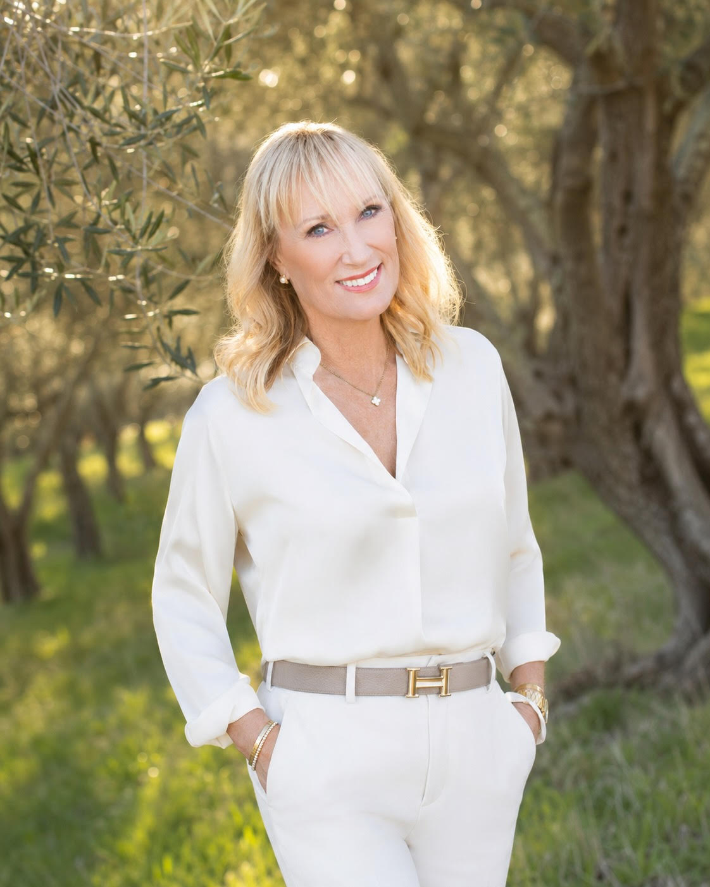

From the Journal

Entrepreneur, Philanthropist & Nonprofit Leader
Celeste White is a Napa Valley entrepreneur, philanthropist, and nonprofit leader based in St. Helena, California. As Founder, President, and Chair of Lux Forum, she brings scholars, writers, and cultural leaders into meaningful conversation with local communities — one thread in a career built on wellness, business innovation, and service.
About Celeste
Celeste White's work moves across several worlds at once — public education, estate agriculture, healthcare innovation, and decades of nonprofit board service — but a single thread runs through all of it: a belief that thoughtful people, given the right room, can change a community for the better.
That belief is most visible in her work with Lux Forum, the organization she founded and now chairs, where scholars, writers, and cultural leaders sit down with the neighborhoods and towns they rarely otherwise reach.
Off the page, she and her husband, Dr. Robert White, keep that same instinct alive on their St. Helena ranch, with glimpses shared through her Instagram feed — where family, faith, and the outdoors set the pace for everything else.
Learn more →From the Journal
Get in Touch
Whether you're a fellow nonprofit leader, a journalist on deadline, or simply curious about Horse Rock Olive Oil or Lux Forum, Celeste welcomes the note.